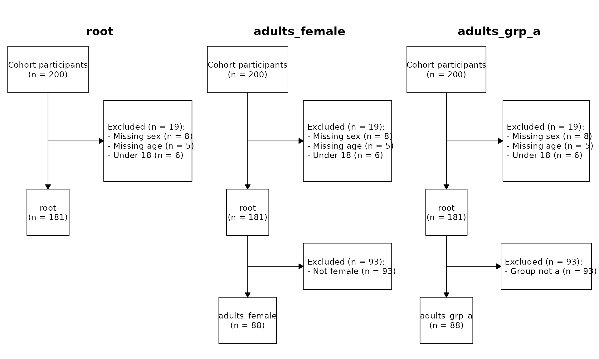
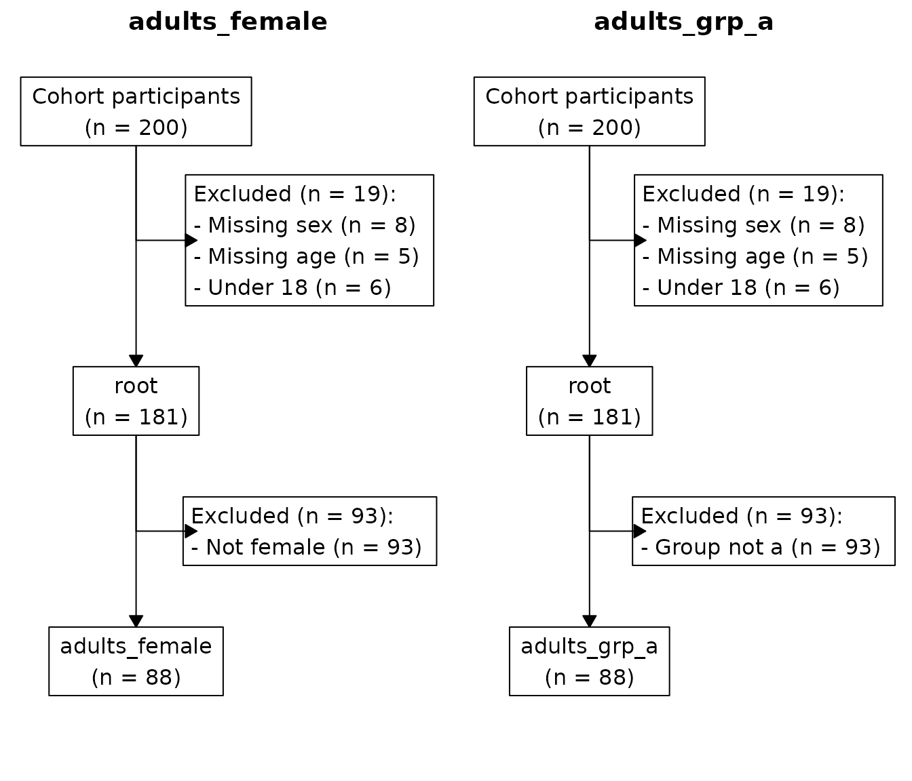

cohort provides one R6 class,
CohortPipeline. It builds analytic cohorts with full
provenance. Cohort construction stays strictly upstream of analysis. The
pipeline produces analytic data tables, then hands them to whatever
consumes them downstream.
A worked example
We start with a small simulated dataset.
library(cohort)
#> cohort 2026.8.21
#> https://www.rwhite.no/cohort/
library(data.table)
#>
#> Attaching package: 'data.table'
#> The following object is masked from 'package:base':
#>
#> %notin%
set.seed(1)
d <- data.table(
id = 1:200,
age = sample(c(NA, 16:80), 200, replace = TRUE),
sex = sample(c("F", "M", NA), 200, replace = TRUE,
prob = c(0.48, 0.48, 0.04)),
grp = sample(c("a", "b"), 200, replace = TRUE)
)Step 1: install a base table
cp <- CohortPipeline$new(
d,
cache_file = file.path(tempdir(), "cohort_cache.rds"),
label = "Eligible patients"
)
on.exit(cp$save(), add = TRUE)CohortPipeline$new() makes a defensive copy of
d once. The pipeline never mutates your data table,
whatever operations you run on it.
The cache_file argument enables incremental
re-execution. On the first run the pipeline writes a snapshot to disk.
On later runs it restores the snapshot, and matching operations replay
instantly with no recomputation. The label argument is the
cohort’s display label in CONSORT diagrams, and defaults to
"Cohort participants". The identifier "root"
is universal, and code always uses it.
Step 2: apply root-level exclusions
Every exclusion takes a human-readable reason and an R expression as a string. The pipeline parses the string and evaluates it against the rows currently included on the branch.
cp$exclude_and_track("root", "Missing sex", "is.na(sex)")
cp$exclude_and_track("root", "Missing age", "is.na(age)")
cp$exclude_and_track("root", "Under 18", "age < 18")The pipeline treats NA predicate results as
FALSE and keeps those rows. You therefore do not need a
defensive !is.na(...) clause for every column.
Step 3: branch into sub-cohorts
cp$new_cohort("adults_female", from = "root", label = "Adult females")
cp$exclude_and_track("adults_female", "Not female", "sex != 'F'")
cp$new_cohort("adults_grp_a", from = "root",
label = "Adults, group A")
cp$exclude_and_track("adults_grp_a", "Group not a", "grp != 'a'")Your code references identifiers ("adults_female",
"adults_grp_a"). Figures show labels. Call
new_cohort() again with a different label. The pipeline
updates the label silently and does not invalidate the cache.
A branch starts identical to its parent at the moment of branching. Sibling branches evolve independently.
The freeze rule
A cohort becomes frozen the first time either:
- another cohort branches from it, or
- an artifact is set on it.
After a cohort freezes, $exclude_and_track() on it
errors. The rule guarantees that a cohort’s name maps to one definition
forever. Once children depend on a cohort, its exclusion list is fixed.
The practical workflow is: apply all exclusions on a cohort, then branch
from it or attach artifacts. Multi-way forks are unaffected. You can
branch a frozen cohort as many times as you like.
Step 4: derive cached artifacts
set_artifact() is for reusable per-cohort objects
(analytic-ready data tables, summary statistics, baseline tables). Each
callback receives a copy of the included rows. It also receives the
named list of artifacts already attached to the cohort.
cp$set_artifact("dt_for_analysis",
from = "adults_female",
fn = function(dt, sib) {
dt[, age_group := cut(age,
breaks = c(18, 30, 50, Inf),
right = FALSE,
labels = c("18-29", "30-49", "50+"))]
dt
}
)Each set_artifact() callback receives a fresh
copy of the cohort’s included rows. It does not see changes that
previous artifacts made. To chain derivations, read the previous
artifact from the sib argument:
Step 5: inspect the cohort tree
print(cp)
#> <CohortPipeline>
#> root: loaded = 200, included = 181, excluded = 19, 3 exclusion step(s)
#> adults_female: branched from root at n = 181, own excluded = 93, included = 88, 1 own step(s)
#> $ dt_for_analysis
#> $ baseline_table
#> adults_grp_a: branched from root at n = 181, own excluded = 93, included = 88, 1 own step(s)
cp$list_cohorts()
#> name parent n_total n_included n_excluded n_own_steps n_artifacts
#> <char> <char> <int> <int> <int> <int> <int>
#> 1: root <NA> 200 181 19 3 0
#> 2: adults_female root 200 88 112 1 2
#> 3: adults_grp_a root 200 88 112 1 0
#> frozen
#> <lgcl>
#> 1: TRUE
#> 2: TRUE
#> 3: FALSE
cp$consort()
#> branch parent step reason expr_str n_excluded n_remaining
#> <char> <char> <int> <char> <char> <int> <int>
#> 1: root <NA> 1 Missing sex is.na(sex) 8 192
#> 2: root <NA> 2 Missing age is.na(age) 5 187
#> 3: root <NA> 3 Under 18 age < 18 6 181
#> 4: adults_female root 4 Not female sex != 'F' 93 88
#> 5: adults_grp_a root 4 Group not a grp != 'a' 93 88$consort() returns a long-form table — one row per
exclusion step, across every branch. Each branch contributes only its
own steps. A step that a branch inherits from its parent appears under
the parent.
Step 6: hand off downstream
Cached artifacts are plain R objects. Read them with
$get_artifact(), then pass them to whatever consumes the
analytic data.
analytic_dt <- cp$get_artifact("adults_female", "dt_for_analysis")
baseline <- cp$get_artifact("adults_female", "baseline_table")
head(analytic_dt)
#> id age sex grp age_group
#> <int> <int> <char> <char> <fctr>
#> 1: 3 48 F b 30-49
#> 2: 5 28 F a 18-29
#> 3: 6 73 F b 50+
#> 4: 9 68 F a 50+
#> 5: 10 21 F b 18-29
#> 6: 14 58 F a 50+
baseline
#> age_group N mean_age
#> <fctr> <int> <num>
#> 1: 18-29 14 25.14286
#> 2: 30-49 30 39.80000
#> 3: 50+ 44 63.54545If you use an analysis-orchestration package, register each artifact
as a named data entry — typically one short loop over
cp$list_artifacts().
Schemas
Use schemas to declare a column-type contract on a branch and verify it before downstream code consumes the data.
cp$declare_schema("adults_female", schema = list(
age = list(type = "numeric", na = FALSE),
sex = list(type = "character", na = FALSE)
))
cp$validate()
#> [validate] All CohortPipeline schemas passedIf a column is missing, has the wrong type, or carries unexpected
NAs, $validate() throws one error that lists
every problem. Pass auto_validate = TRUE to
CohortPipeline$new() to fail at the failure site. Every
$new_cohort() and $set_artifact() call then
validates after it runs.
CONSORT diagrams
The simplest way to draw CONSORT diagrams is $plot().
With no arguments it renders one panel per cohort. Each panel walks the
root-to-cohort path, and cohort names become box labels.
cp$plot()
You can name specific cohorts:
cp$plot(c("adults_female", "adults_grp_a"))
Or save to disk:
cp$plot(file = "Figure_1_CONSORT.pdf")For full control over labels, panel titles, side branches and layout,
use $draw_consort_panels() (see
?CohortPipeline).
How the cache decides what to recompute
The worked example already uses cache_file and
on.exit(cp$save()). On the second run of the same script,
the pipeline checks every operation against the cached log.
| Method | Cache key |
|---|---|
exclude_and_track |
(branch, reason, expr_str) |
new_cohort |
(name, from) |
declare_schema |
overwrites; not cached |
set_artifact |
(name, from, body(fn), argset) |
A match advances the replay cursor with no work done. A mismatch
truncates the log at that point and drops downstream artifacts. It also
cascades to descendant cohorts whose inherited prefix is now stale. It
then recomputes only what changed. Labels are presentation, not part of
the cache key. Call
new_cohort("adults_female", from = "root", label = "Adult women")
again, and the pipeline updates the label. It invalidates nothing.
For set_artifact, you SHOULD use the 3-argument
signature function(dt, sib, argset). Data dependencies in
argset participate in the cache key. A change from
argset = list(washout = 84L) to washout = 90L
therefore triggers a recompute. The 2-argument form
function(dt, sib) still works. It does not catch
closure-captured changes.
The cache key uses body(fn) literally. If
fn calls a helper that you change, the cache cannot detect
the change. Either include a version tag in argset, or call
cp$invalidate(cohort) to drop the cohort and force a
recompute.
Mutation contract (summary)
| Method | Returns | Mutation safe? |
|---|---|---|
$get_included(c) |
Independent copy | Yes |
Callback in $set_artifact
|
Independent copy of subset | Yes |
$get_everyone(c) |
Independent copy + status | Yes |
Operations that go through the public API never modify the user’s input data table or another branch.
Performance notes
- Branching is O(n) in the number of rows of the base table. The data values themselves are stored once and shared across the tree.
-
$exclude_and_track()evaluates the predicate against the included subset only. A predicate can therefore assume that earlier exclusions already removed invalid rows. - The exclusion log accumulates as a list. It materializes as a
data.tableonly on read ($consort(),$list_cohorts()). That avoids quadraticrbindgrowth.